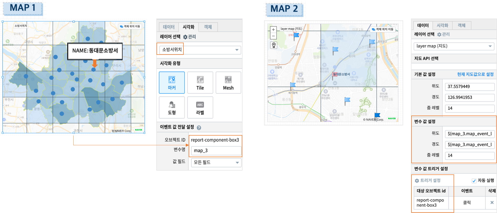
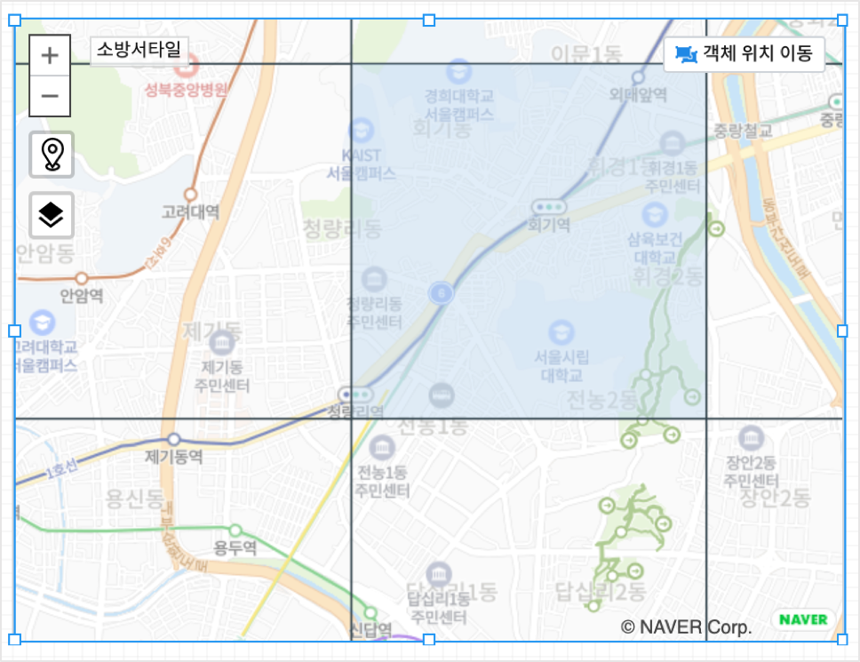
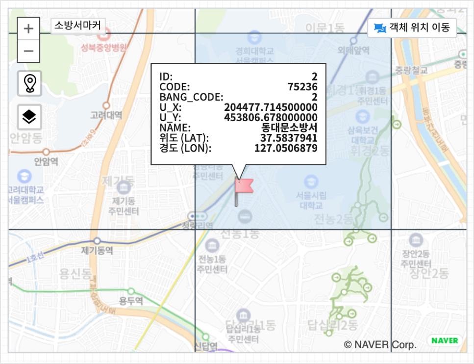
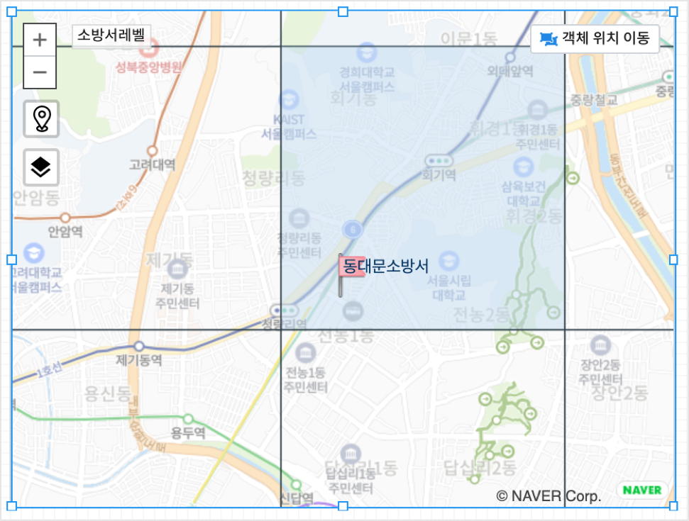

MAP 2 : 이벤트변수로 지도 표현¶
“MAP 2” 지도는 트리거 이벤트로 설정한 “MAP 1” 지도로부터 전달받은 이벤트변수에 따라 지도에 표시되는 위치와 내용이 달라집니다.
“MAP 1” 의 소방서 포인트를 클릭하면 옆의 다른 지도 “MAP 2” 에서 해당 소방서를 중심으로 확대된 지도(zoom 레벨 14)로 표시되고, 해당 소방서와 주변의 119안전센터가 같이 표시됩니다.
Contents
MAP 2 : 이벤트 전달¶
layer map¶
MAP 2 에서 트리거로 MAP 1 을 설정합니다.
MAP 1 오브젝트는 변수명 map_3 이라는 것을 확인합니다.
MAP 1 에서 동대문소방서 마커를 클릭하면 동대문소방서의 위,경도 좌표는 ${map_3.map_event_lat}, ${map_3.map_event_lng} 로 저장됩니다.
- 이 변수값을 MAP 2 의 기본 지도 레이어인 ”layer map” 에 설정합니다.
MAP 1 의 마커 포인트를 클릭하면 클릭한 포인트가 MAP 2의 중앙 좌표로 설정되어 표시됩니다.
지도 시각화유형 : Tile¶
지도의 시각화유형 중 Tile 을 선택하고, 소방서 위/경도 좌표에서 TILE_CODE 를 계산하여 지도에 격자로 표시합니다. 격자는 zoom level 14 로 설정합니다.
레이어 이름 : 소방서타일
- 데이터탭
- 데이터 모델EDU_SEOUL_FIRE_STA_COOR
서울시 소방서의 위경도 좌표
- 검색어
소방서 위/경도 좌표 기준으로 TILE_CODE 를 구합니다.
* | pylambda row : [ int( (1.0 - math.asinh(math.tan(math.radians(row[i]))) / math.pi) / 2.0 * ( 2.0 ** 14 ) )
if i == 6 else
int( ( row[7] + 180.0 ) / 360.0 * (2.0 ** 14 ) )
if i == 7 else
row[i] for i in range(len(row)) ] import math
| rename _1 ID | rename _2 CODE | rename _3 BANG_CODE | rename _4 U_X | rename _5 U_Y
| rename _6 F_NAME | rename _8 경도_TILE | rename _7 위도_TILE
| concat 경도_TILE, ",", 위도_TILE, ",14" as TILE_CODE
{kind=link}
지도 시각화유형 : 마커¶
MAP 1 에서 전달받은 ${map_3.map_event_lat}, ${map_3.map_event_lng} 변수로 표시된 MAP 2 지도에서
레이어 ‘소방서마커’ 를 추가합니다. 소방서위치를 지도의 시각화유형 중 마커-깃발 로 표시합니다.
레이어 이름 : 소방서마커
- 데이터 탭
- 데이터 모델EDU_SEOUL_FIRE_STA_COOR
지도 MAP 2 위에 소방서를 마커-깃발로 표시합니다.
- 시각화 탭
시각화유형 옵션에서 마커-깃발로 설정합니다.
지도 시각화유형 : 라벨¶
소방서를 마커-깃발로 표시한 레이어위에 라벨 로 소방서이름을 표시합니다.
레이어 이름 : 소방서마커
- 데이터 탭
- 데이터 모델EDU_SEOUL_FIRE_STA_COOR
지도 MAP 2 위에 소방서를 라벨로 표시합니다.
- 시각화 탭
시각화유형 옵션에서 라벨로 설정합니다.
지도 시각화유형 : 마커¶
소방서 외에 119 안전센터를 마커-깃발로 표시합니다.